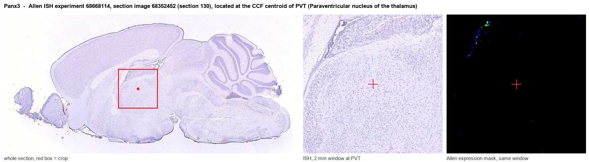
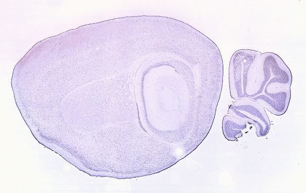
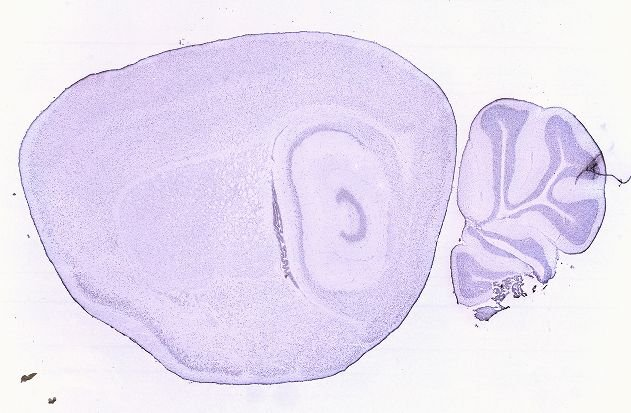
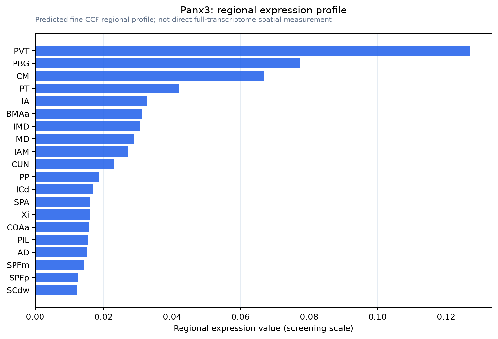

Panx3
Pannexin-3
Spatial tier: STRICT_EXCLUSIVE · Class: ION_CHANNEL · Top region: PVT (Paraventricular nucleus of the thalamus) · Positive regions: 7/554
50.9Discovery Score
39.3Targetability Score
CEvidence grade C
What this means: Panx3: predicted fine-region profile is strict-exclusive, with 7 positive regions out of 554 (limit 12); direct spatial validation is required.
Function in PVT: evidence, prediction, innovation
- Gene function
- Panx3 encodes pannexin-3, a large-pore channel acting as an ER Ca2+ leak channel, ATP-releasing hemichannel and gap junction. It drives osteoblast and chondrocyte differentiation via Wnt and p21; unlike Panx1 it is largely absent from neural tissue, documented in skin, cartilage, bone and cochlea.
- Region function
- The paraventricular thalamus is a midline glutamatergic hub relaying hypothalamic and brainstem state signals to accumbens, amygdala and cortex, required for wakefulness, salience, stress and anxiety.
- Published in this region
- inferred No region-specific literature found. The closest finding is Penuela et al. 2007, who detected Panx1 in brain while Panx3 was confined to skin and cartilage, whereas PVT cell-type surveys describe neuropeptide-defined populations without mentioning pannexins (Curtis et al. 2020).
- Predicted function
- Prediction: Panx3 most likely acts as an ATP-release hemichannel or ER Ca2+ leak pathway in PVT glutamatergic neurons or astrocytes. Since PVT ATP/adenosine tone tracks arousal, conditional PVT deletion should fragment wake bouts and alter NREM delta rebound, and hemichannel block should dampen stress-evoked PVT c-Fos. Vascular and ependymal cells must be excluded first.
- Innovation
- ★★★★★ 5/5 Pannexin-3 has essentially no neuroscience literature, so a neuronal or glial role in this thalamic nucleus would be first in field.
- Tools
- Global and conditional Panx3 knockouts exist from bone and skin work; Panx3 antibodies (Laird group); pharmacology is non-selective (probenecid, carbenoxolone; 10Panx targets Panx1). PVT is accessible with Vglut2-Cre, Drd2-Cre, Gal-Cre.
- References
Direct evidence located at the region

Allen ISH experiment 68668114, section image 68352452 (section 130): the section that contains the CCF centroid of Paraventricular nucleus of the thalamus according to the Allen image-to-atlas alignment (reference_to_image), with a 2 mm window around that point. Left: whole section, red box = window. Middle: ISH signal. Right: Allen's expression-mask view of the same window. open this image in the Allen viewer
Look it up yourself: Allen Mouse Brain ISH for Panx3Allen reference atlas: PVT (structure 149)ABC Atlas MERFISH viewer(in the ABC Atlas choose dataset MERFISH-C57BL6J-638850-CCF, colour cells by gene "Panx3" or by parcellation_substructure "PVT")All genes confined to PVT + 3-D brain
Direct spatial evidence
MERFISH REGION LOCATOR

DIRECT ALLEN ISH

DIRECT ALLEN ISH

Regional expression figure

Predicted WMB × fine-CCF profile; not direct full-transcriptome spatial measurement.
Spatial profile
Evidence and specificity
- Evidence status
- PREDICTED_FINE
- Direct sources
- None; predicted localization only
- Exclusive threshold
- 12 positive regions out of 554
- Spatial specificity
- 0.423
- Top-region fraction
- 0.174
- Filter status
- PASS
Interpretation limits
- Cell-type-to-region projection is imputed expression, not direct spatial measurement.
- Adult reference atlases do not establish stability across age, sex, strain, state, or disease.
- Transcript abundance does not guarantee protein abundance or genetic-tool performance.